Double Commander kann mit komprimierten Dateien arbeiten, als wären es einfache Ordner.
Wenn wir zum Beispiel eine ZIP-Datei in einem Panel haben, können wir sie einfach auswählen, Enter drücken, und das Panel zeigt den Inhalt der ZIP-Datei, als würden wir in ein Verzeichnis wechseln.
Double Commander ist vielseitig genug, um externe Programme für komprimierte Dateien über die eigene Oberfläche zu nutzen. Es verwendet zwei verschiedene Prinzipien für komprimierte Dateien:
Wenn wir versuchen, ein Archiv zu öffnen, prüft Double Commander zuerst die Liste der verfügbaren Packer-Plugins.
Sobald wir „in“ der komprimierten Datei sind, können wir einige minimale Grundfunktionen ausführen, etwa die Datei ansehen, sie in das andere Panel kopieren und einige begrenzte Funktionen dieser Art.
Das folgende Bild zeigt uns ein Beispiel, in dem wir die komprimierte Datei „help.rar“ ausgewählt haben und einfach Enter darauf drücken, als wäre sie ein Verzeichnis:
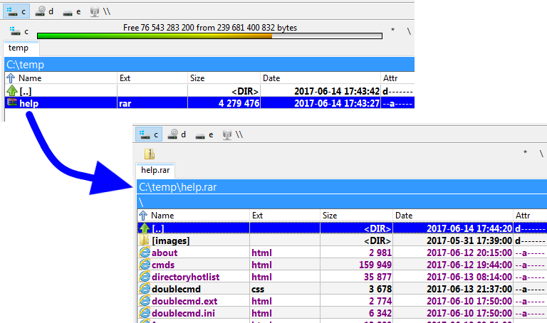
Nach dem Aufruf des Befehls zum Ansehen (F3) oder Bearbeiten (F4) extrahiert Double Commander die Datei unter dem Cursor in das Systemverzeichnis für temporäre Dateien und öffnet sie. Nach dem Schließen des Dateibetrachters wird die temporäre Datei gelöscht. Wenn die im Editor geöffnete Datei geändert wird, kann Double Commander sie zurückpacken (wenn das Format der komprimierten Datei und das Packer-Plugin oder der externe Archivierer diese Funktion unterstützen), siehe <AutoCopyBackward>.
Bei einem Doppelklick oder beim Drücken von Enter zeigt Double Commander das Eigenschaftenfenster der gepackten Datei:
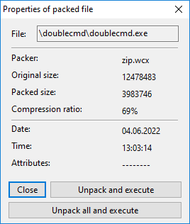
Die Zeile Packer zeigt den Namen des verwendeten Packer-Plugins oder den Namen des externen Archivierers.
Schaltflächen:
Schließen – schließt das Eigenschaftenfenster.
Entpacken und ausführen – Double Commander extrahiert die Datei unter dem Cursor in das Systemverzeichnis für temporäre Dateien und ruft die Standardaktion aus den internen oder den System-Dateizuordnungen auf.
Alles entpacken und ausführen – wie die vorherige, aber zuerst wird der gesamte Inhalt des Archivs extrahiert.
Double Commander erlaubt, das automatische Öffnen einer Datei direkt in der zugeordneten Anwendung zu konfigurieren, verwenden Sie <AutoExtractOpenMask>.
Beim Schließen löscht Double Commander alle temporären Dateien.
Wir können Double Commander so konfigurieren, dass es externe „Packer-Plugin“-Dateien verwendet, die beim Umgang mit einem komprimierten Archiv helfen.
Schon bei der Installation bringt Double Commander bereits einige dieser WCX-Plugin-Dateien mit.
Außerdem gibt es im Web einige weitere. Wir können einfach nach WCX-Plugins suchen.
Denken wir auch daran, dass diejenigen, die für Total Commander gemacht wurden, grundsätzlich auch mit Double Commander funktionieren sollten.
Zum Installieren, Aktivieren oder Konfigurieren müssen wir Konfiguration > Optionen... > Plugins > Plugins WCX öffnen:
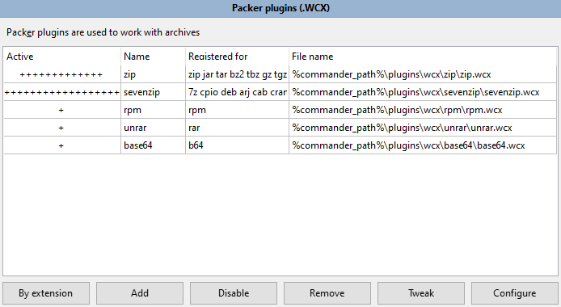
Bitte beachten Sie, dass einige Formate nur lesbar sind. Das bedeutet, dass nur das Ansehen des Inhalts, das Entpacken und das Prüfen verfügbar sind.
Manchmal existiert das Plugin für die Art von Dateiarchiv, die wir verwenden wollen, nicht.
Oder aus welchem Grund auch immer kann es vorkommen, dass wir ausdrücklich einen externen Packer verwenden wollen, um eine Funktion zu nutzen, die im scheinbar gleichwertigen Plugin nicht vorhanden ist.
Double Commander verwendet ein Prinzip der Arbeit mit externen Archivierern, das dem Plugin MultiArc für Total Commander ähnelt.
Um es klar zu sagen: die Verwendung eines externen Archivierers lässt sich so zusammenfassen: Es ist ein Weg, den Archivierer zu starten, mit dem wir vertraut sein mögen, ihn aber von Double Commander steuern zu lassen, indem der Programmdatei des Archivierers die verschiedenen Parameter übergeben werden, die wir brauchen, damit er wie in die Anwendung integriert wirkt.
Der Rest dieser Seite behandelt dieses Thema: wie wir Double Commander konfigurieren, damit es den externen Archivierer startet und damit tut, was wir brauchen.
Nehmen wir an, wir wollen „rar.exe“ für RAR-Archive verwenden.
Wie wir uns denken können, müssen wir im Wesentlichen konfigurieren, wie der externe Archivierer aufzurufen ist, um …
Das geschieht über Konfiguration, Optionen, Archivierer, wie unten gezeigt:
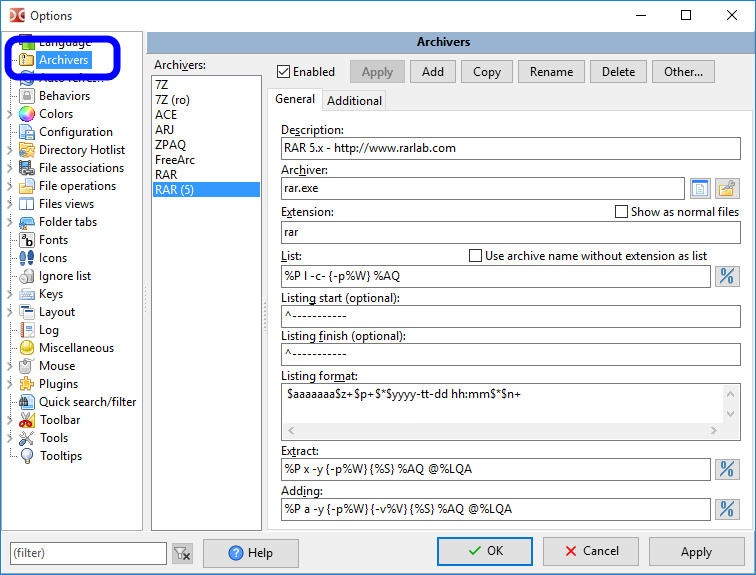
Alle Einstellungen werden in der Datei multiarc.ini gespeichert.
Sehen wir uns in den folgenden Abschnitten die vielseitigen Möglichkeiten an, die Double Commander uns bietet, um die Verwendung eines externen Packers richtig einzubinden.
Wir beschreiben hier nicht jedes einzelne Feld, denn sobald wir angefangen haben, ist es ziemlich geradlinig. Wir nehmen uns aber Zeit, ein Beispiel der Einbindung ordentlich zu beschreiben.
Wir beschreiben die Einbindung des externen Archivierers „rar.exe“. Nichts ist besser als ein vollständiges Beispiel Schritt für Schritt.
Wir klicken unten auf die Schaltfläche „Hinzufügen“, vergeben einen aussagekräftigen Namen, der in der Liste der Archivierer erscheint, und sind dann bereit, ihn zu konfigurieren.
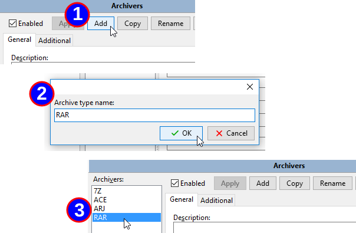
Dann müssen wir eine aussagekräftige Beschreibung für den Archivierer angeben, den genauen Ort der Programmdatei des Archivierers und danach die zugehörige Dateierweiterung ohne den Punkt.
Wenn wir mehr als eine mögliche haben, fügen wir sie einfach mit einem einzelnen Komma zwischen jeder hinzu, ohne Leerzeichen.
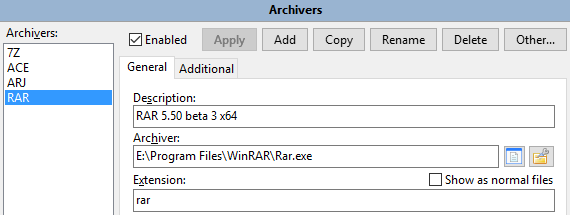
Hinweis: Double Commander unterstützt doppelte Erweiterungen (zum Beispiel „tar.gz“, „tar.xz“ und so weiter). Sie müssen am Anfang der Liste der Erweiterungen stehen (also „tar.gz“ vor „gz“).
Wie zuvor erwähnt müssen wir konfigurieren, wie unsere Programmdatei des externen Archivierers aufzurufen ist, um zu tun, was wir wollen.
Um uns dabei zu helfen, bietet Double Commander uns zahlreiche eigene Variablen, um die Konfigurationszeichenfolge für die verschiedenen Aktionen zu füllen, die wir konfigurieren können.
Hier folgt eine Tabelle mit den Variablen, die verwendet werden können, und womit sie ersetzt werden:
| Befehlsdefinition | |
|---|---|
| Variablenausdruck | Wofür er steht |
%P | Langer Name des Archivierungsprogramms (wie er im Schlüssel „Archiver“ steht) |
%p | Kurzer Name des Archivierungsprogramms (wie er im Schlüssel „Archiver“ steht) |
%A | Langer Name der Archivdatei |
%a | Kurzer Name der Archivdatei |
%L | Name der Dateiliste. Die Dateiliste ist die Datei, die die Namen der Dateien enthält, die der externe Archivierer verarbeiten soll. Die Dateinamen sind lang. |
%l | Dateiliste mit kurzen Dateinamen |
%F | Der Name einer einzelnen zu verarbeitenden Datei. Der Archivierer wird mehrmals ausgeführt, bis alle Dateinamen aufgebraucht sind. Diese Variable sollte nur verwendet werden, wenn der Zielarchivierer keine Dateilisten auf der Befehlszeile unterstützt. |
%V | Die Volumengröße (für ein mehrteiliges Archiv) |
%W | Das Passwort |
%E<errorlevel> | Maximal akzeptabler errorlevel des Befehls. Zum Beispiel gibt %E2 an, dass die errorlevel 0, 1 und 2 akzeptabel sind.Diese Variable kann an beliebiger Stelle des Befehls angegeben werden. Fehlt sie, gilt nur errorlevel 0 als erfolgreich. |
%O<modifier> | Standardmäßig wandelt Double Commander die Ausgabe des Archivierers von der OEM-Kodierung nach UTF-8 um. Damit überschreiben wir die Kodierung. Siehe unten die möglichen Kodierungsmodifikatoren. Kann nur mit der Aktion „Auflisten“ verwendet werden. |
%R | Zielunterverzeichnis IM Archiv |
{} | Wenn eine Variable in geschweiften Klammern steht, wird sie nur hinzugefügt, wenn diese Variable etwas Nichtleeres enthält |
%S | Die Variable gibt die Position für zusätzliche Befehlszeilenparameter an, die wir im Dialog zum Packen von Dateien hinzufügen können |
Keine Sorge, wir geben später ein Beispiel, damit es besser verständlich wird.
Diese Modifikatoren können unmittelbar nach Variablen ohne Leerzeichen angegeben werden.
| Variablenmodifikatoren | |
|---|---|
| Modifikatorbuchstabe | Wofür er steht |
F | in die Dateiliste nur Dateien aufnehmen (kann mit den Variablen %L und %l verwendet werden) |
Q | Namen mit Leerzeichen in Anführungszeichen setzen |
q | alle Namen in Anführungszeichen setzen |
W | nur den Namen verwenden, ohne Pfad |
P | nur den Pfad verwenden, ohne Namen |
A | die ANSI-Systemkodierung unter Windows oder die Standard-Systemkodierung auf unixartigen Systemen verwenden (in GNU/Linux-Distributionen ist das gewöhnlich UTF-8); kann mit den Variablen %L und %O verwendet werden |
U | UTF-8-Kodierung verwenden; kann mit den Variablen %L und %O verwendet werden |
Auch hier keine Sorge, wir haben später ein Beispiel.
Wenn wir wollen, dass Double Commander mit der komprimierten Archivdatei arbeitet, als wäre sie ein Verzeichnis mit Dateien, müssen wir die Liste der Dateien abrufen können, die das Archiv enthält.
An diesem Punkt müssen wir nicht entpacken! Nein, es geht nur darum, aufzulisten, was es enthält, damit Double Commander uns den Inhalt zeigt.
In unserem Beispiel mit „rar.exe“ gibt es, wenn wir in dessen Dokumentation sehen, den Befehl „v“, mit dem uns die Konsolenanwendung „rar.exe“ die Liste der Dateien im Archiv ausgibt:
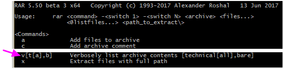
Gemäß der Verwendung der Anwendung müssen wir, um die Liste dessen zu erhalten, was im RAR-Archiv ist, „rar.exe“ mit Parametern aufrufen: mit dem Befehl „v“ und dann dem Archivnamen.
Testen wir das zuerst von Hand, indem wir versuchen, den Inhalt einer Datei wie „E:\Temp\just.rar“ anzuzeigen.
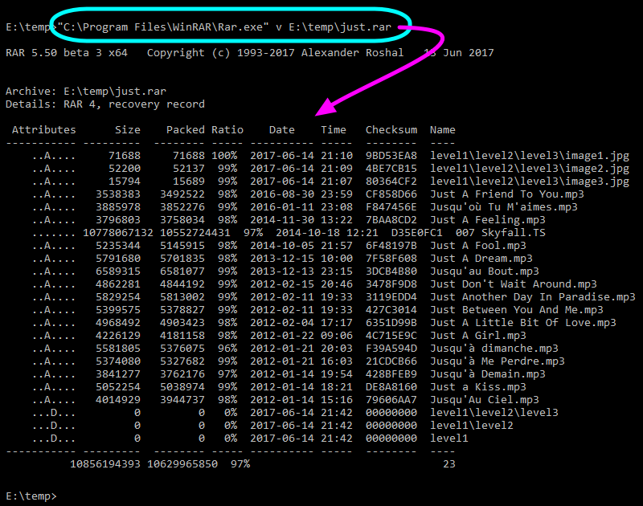
Was wir jetzt tun müssen, ist, „Auflisten“ so zu konfigurieren, dass Double Commander gesagt wird, wie „rar.exe“ aufzurufen ist, um den Inhalt des komprimierten Archivs zu erhalten.
Dazu schreiben wir dasselbe, was wir gerade getan haben, aber mit der zuvor genannten Variable und dem Variablenmodifikator.
So sieht es aus:
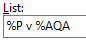
Wir haben %P v %AQ geschrieben, unter Verwendung der zuvor genannten Variable und des Variablenmodifikators.
All das dient dazu, den externen Archivierer mit den richtigen Parametern aufzurufen.
Das wird verwendet, wenn wir den internen Befehl cm_OpenArchive verwenden.
Ein paar Worte zur Option „Archivnamen ohne Erweiterung als Liste verwenden“: Diese Option ist für Archive gedacht, die nur eine Datei enthalten können und deren Dateiname dem Archivnamen ohne Erweiterung entspricht (Bzip2, XZ und andere). Solche komprimierten Dateien enthalten gewöhnlich nicht den Namen der ursprünglichen Datei.
Was wir bisher getan haben, lässt den Archivierer die Liste der Dateien in den Archivdateien ausgeben.
Das ist aber noch nicht alles! Wir müssen diese ausgegebenen Daten zurückholen und in unserem Panel anzeigen.
Wir brauchen also, dass Double Commander die Ausgabetabelle interpretiert, die der Befehl des Archivierers ausgibt.
Wie wir in der vorherigen Aufnahme sehen, ist die Ausgabe von „rar.exe“ zum Inhalt nicht nur reine Daten.
Ringsherum stehen störende Angaben, die wir entfernen müssen, um nur die eigentliche Dateiliste zu behalten.
Glücklicherweise können wir eine magische Zeichenfolge konfigurieren, sodass Double Commander wartet, bis es diese Zeichenfolge sieht, bevor es beginnt, die folgenden Zeilen zu analysieren.
Wir können auch die magische Zeichenfolge konfigurieren, um die Analyse zu beenden.
Weil wir davor und danach eine gestrichelte Linie haben, ist es ziemlich einfach, diese beiden Parameter mit den gestrichelten Linien zu setzen:
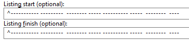
Falls ein externes Archiv sofort reine Daten ohne zusätzliche Zeilen ausgibt, lassen wir die beiden Felder einfach leer.
Das Zirkumflex („^“) zeigt an, dass die magische Zeichenfolge unbedingt am Zeilenanfang stehen muss, mit nichts davor. Andernfalls kann der Text irgendwo in der Zeile stehen.
Wenn nicht sicher ist, dass sie die Zeile beginnt, etwa wenn der externe Archivierer die Zeile mit Datum und Uhrzeit beginnt und danach eine konstante Zeichenfolge folgt, setzen wir die magische Zeichenfolge auf die konstante Zeichenfolge, fügen aber das Zirkumflex nicht hinzu. Das weist Double Commander an, dass die zu suchende Zeichenfolge irgendwo stehen kann.
Wenn die Zeichenfolge „Listenende“ mit einem Dateinamen verwechselt werden könnte, könnte die Verarbeitung des Archivinhalts zu früh enden.
Deshalb ist es, wenn möglich, gut anzugeben, dass die Zeichenfolge die Zeile beginnen muss.
Wenn es außerdem einen Weg gibt, die Zeichenfolge „Listenende“ so lang wie möglich und trotzdem konstant zu setzen, ist das noch besser und sicherer, damit später keine Verwechslung entsteht.
Nun weiß Double Commander genau, welche Daten zu analysieren sind, um die Dateiliste der Archivdatei zu erhalten.
Es wäre leicht gewesen, in der Anwendung fest eine Routine zu hinterlegen, die diese „RAR“-Ausgabe analysiert, um die Dateiliste zu erhalten.
Das tut Double Commander aber nicht.
Stattdessen ist es äußerst vielseitig, indem es uns die Möglichkeit gibt, selbst zu konfigurieren, wie die Tabelle analysiert wird!
Das ist vielleicht etwas aufwendiger, als nichts tun zu müssen, gibt uns aber andererseits ein Höchstmaß an Flexibilität, weil wir externe Archivierer verwenden können, von denen die Entwickler von Double Commander nicht einmal wussten!
Um uns beim Analysieren der Ausgabetabelle zu helfen, die der Archivierer uns gibt, haben wir verschiedene Ausdrücke, die durch Buchstaben dargestellt werden.
Die folgende Tabelle gibt uns die „Standardsyntax“ zum Analysieren der Inhaltsliste, die das externe Archiv uns erzeugt hat.
Wie wir am nächsten Beispiel sehen werden, beruht die „Standardsyntax“ im Wesentlichen auf einer direkteren Ersetzung als die „erweiterte Syntax“.
Wenn möglich, versuchen wir diese Syntax zu verwenden, weil ihre Analyseergebnisse schneller vorliegen als bei der folgenden „erweiterten Syntax“.
| Analyse mit Standardsyntax | |
|---|---|
| Ausdruck | Wofür er steht |
n | Dateiname |
z | entpackte Größe |
c | Dateibeschreibung |
p | gepackte Größe |
d | Tag |
t | Monat |
TTT | dreistelliger Monatsname (Jan, Feb, Mar, ...) |
y | Jahr |
h | Stunden |
H | Buchstabe zur Stundenangabe (a – vormittags, p – nachmittags) |
m | Minuten |
s | Sekunden |
a | Attribute |
e | Dateierweiterung |
? | ein Zeichen überspringen |
* | bis zum ersten Leerzeichen oder Zeilenende überspringen |
+ | für das Namensfeld am Zeilenende: alle Zeichen bis zum Ende der Zeile verwenden |
Wenn der Archivierer die Angaben zu jeder Datei auf mehr als einer Zeile anzeigt, müssen wir die entsprechende Anzahl von Zeilen angeben, um den Inhalt zu analysieren (Double Commander unterstützt bis zu 50 Zeilen).
Das Schöne daran ist, die verfügbaren Ausdrücke aus der vorherigen Tabelle zu verwenden, um die Zeichenfolge „Listenformat“ zu schreiben, die Double Commander für diesen externen Archivierer konfiguriert, damit er Verzeichnis und Dateinamen, Dateigröße, Attribute, Dateidaten usw. aus dem Archiv erhält.
Ein erster Versuch, uns beim Erzeugen dieser Zeile zu helfen, wäre, zum Beispiel im Editor eine Textzeile für eine Datei zu schreiben, die wir zuvor von Hand erzeugt haben, und darunter den passenden Ausdruck aus der vorherigen Tabelle zu schreiben.
Hier ein Beispiel dafür:
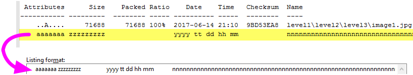
Wie wir sehen, haben wir den Buchstaben des Analyseausdrucks passend zu jedem Feld an genau derselben Position geschrieben, an der es in der Ausgabe des Archivinhalts steht, die unser externer Archivierer uns geliefert hat:
Und wir müssen nur noch 4 Leerzeichen am Anfang der Zeile ausschließen und sie durch „????“ ersetzen.
So konfiguriert wählen wir unser vorheriges Archiv „just.rar“ in einem Panel aus, drücken Enter, um hineinzugehen, als wäre es ein Verzeichnis, und sehen den Dateiinhalt, der uns zeigt, dass das, was wir getan haben, „im Grunde“ funktioniert hat (wenn wir die letzte Datei ignorieren …):
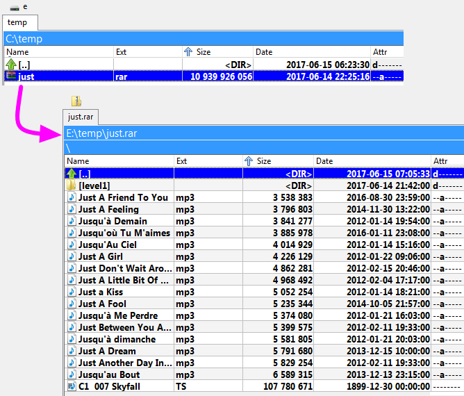
Die folgende Tabelle gibt uns die „erweiterte Syntax“ zum Analysieren der Inhaltsliste, die das externe Archiv uns erzeugt hat.
Die Elemente dieser Syntax brauchen etwas mehr Zeit zur Verarbeitung als die aus der vorherigen Tabelle.
Verwenden wir sie also nur, wenn sich eine problematische Situation mit der vorherigen nicht lösen lässt.
Ein Anwendungsbeispiel folgt im nächsten Abschnitt.
| Analyse mit erweiterter Syntax | |
|---|---|
| Ausdruck | Wofür er steht |
+ | für das Namensfeld nicht am Zeilenende: alle Zeichen bis zum nächsten Leerzeichen verwenden |
+ | nach einem beliebigen numerischen Feld: alle Ziffern bis zum ersten Zeichen verwenden, das keine Ziffer ist |
n+ | alle Zeichen bis zum Ende der Zeile für den Dateinamen verwenden |
z+ | alle Ziffern bis zum ersten Zeichen, das keine Ziffer ist, für die entpackte Größe verwenden |
p+ | alle Ziffern bis zum ersten Zeichen, das keine Ziffer ist, für die gepackte Größe verwenden |
$ | alle Leerzeichen/Tabulatoren bis zum nächsten Zeichen oder Zeilenende überspringen |
\ | die Daten gehen auf der nächsten Zeile weiter (höchstens 2 Zeilen werden unterstützt) |
x | genau 1 Leerzeichen; wenn an dieser Position ein anderes Zeichen steht, die ganze Zeile ignorieren |
z=1024 | entpackte Größe, multipliziert mit dem angegebenen Wert (hier: 1024) |
p=1024 | gepackte Größe, multipliziert mit dem angegebenen Wert (hier: 1024) |
Das Beispiel mit der „Standardsyntax“ war eine gute Vermutung, aber sie ist nicht perfekt.
Es gibt Fälle, in denen sie nicht richtig funktioniert.
Bei sehr großen Dateien ist die Dateigröße breiter als erwartet, sodass unser erster Versuch der Auflistung scheitert.
Sehen wir uns unsere Datei 007 Skyfall.TS an.
Wir sehen, dass sie nicht mit den passenden Angaben angezeigt wird. Vergleichen wir:
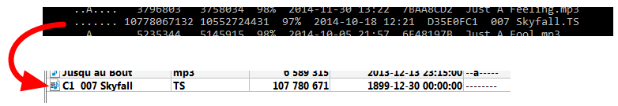
Wir sehen also, dass es bei Dateiname, Dateigröße, Datum usw. nicht stimmt.
Verwenden wir Elemente der „erweiterten Syntax“, um diese problematische Situation zu lösen.
Hier etwas, das verwendet werden kann, damit es funktioniert, auch wenn die ausgegebenen Felder nicht *genau* immer dieselbe Breite haben:
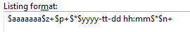
Es ist etwas komplexer, lässt sich aber sehr leicht beschreiben, und am Ende sehen wir, dass es nicht so kompliziert zu erzeugen ist.
Hier eine farbige Beschreibung, die uns hilft, die Analyse jedes kleinen Blocks zu sehen:
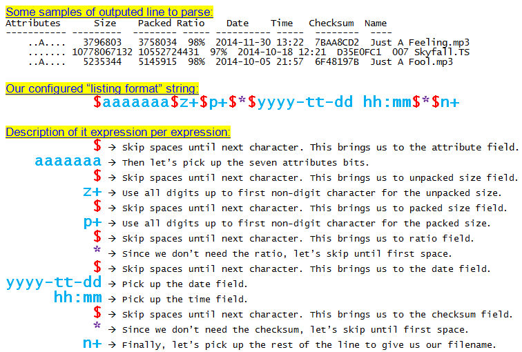
Mit dieser Zeichenfolge „Listenformat“ können wir unseren Test nun wiederholen und haben das richtige Ergebnis, auch für die sehr große Datei:
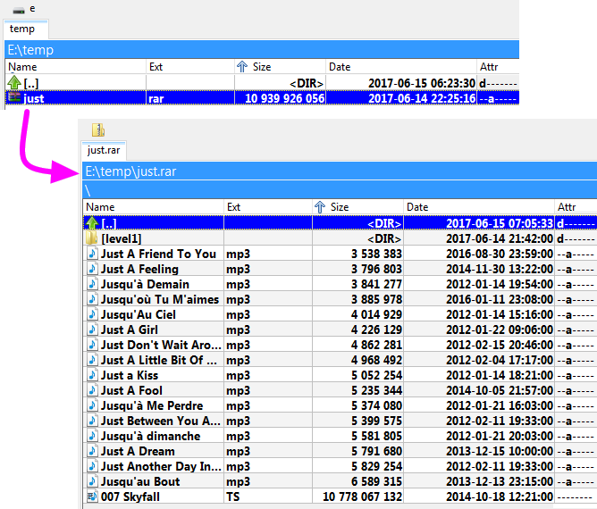
Mit denselben zuvor genannten Variablen und Variablenmodifikatoren ist dies die Zeile, um zu konfigurieren, wie der externe Archivierer aufzurufen ist, um eine Datei oder alle Dateien aus dem ausgewählten Archiv zu „extrahieren“.
Wir setzen unser Beispiel mit „rar.exe“ fort und wissen aus dessen Dokumentation, dass wir den Befehl „x“ verwenden, um anzugeben, dass wir eine Datei oder eine Gruppe von Dateien extrahieren wollen.
Bei „rar.exe“ können wir als Parameter auch eine Liste der zu extrahierenden Dateien übergeben.
Wir nutzen also die Variable %L, die Double Commander uns bietet. Sie erzeugt eine Textdatei, in der jede ausgewählte Datei steht, die aus dem aktiven Panel extrahiert werden soll, und genau diese eine Listendatei übergeben wir als Parameter.
Hier die Zeile, die wir in diesem Beispiel mit „rar.exe“ für das Extrahieren konfigurieren:
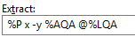
Die Beschreibung dieses Beispiels ist:
Dieser Befehl wird aufgerufen, wenn wir ein Archiv auswählen, um den gesamten Inhalt zu extrahieren, nur eine Datei usw.
Wir bemerken es vielleicht nicht sofort, aber wenn wir in das Archiv „hineingehen“, als wäre es ein Verzeichnis, und F3 drücken, um den Inhalt einer Datei im Archiv anzusehen, findet diese Aktion „Extrahieren“ im Hintergrund statt. Die ausgewählte Datei wird nach diesem Muster in das Systemverzeichnis für temporäre Dateien extrahiert, und dann sehen wir uns diese temporäre Datei mit dem über F3 aufgerufenen Dateibetrachter an.
Das wird verwendet, wenn wir den internen Befehl cm_ExtractFiles verwenden.
Mit denselben zuvor genannten Variablen und Variablenmodifikatoren ist dies die Zeile, um zu konfigurieren, wie der externe Archivierer aufzurufen ist, um eine Datei oder alle Dateien in das ausgewählte Archiv zu „packen“.
Wir setzen unser Beispiel mit „rar.exe“ fort und wissen aus dessen Dokumentation, dass wir den Befehl „a“ verwenden, um anzugeben, dass wir ein Archiv erstellen oder eine Datei oder eine Gruppe von Dateien zu einem vorhandenen Archiv hinzufügen wollen.
Bei „rar.exe“ können wir als Parameter auch eine Liste der hinzuzufügenden Dateien übergeben.
Wir nutzen also die Variable %L, die Double Commander uns bietet. Sie erzeugt eine Textdatei, in der jede ausgewählte Datei aus dem aktiven Panel steht, die dem Archiv hinzugefügt werden soll, und genau diese eine Listendatei wird als Parameter übergeben.
Hier die Zeile, die wir in diesem Beispiel mit „rar.exe“ für das Erstellen oder Hinzufügen zum Archiv konfigurieren:
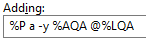
Die Beschreibung dieses Beispiels ist:
Dieser Befehl wird aufgerufen, wenn wir eine Datei oder eine Gruppe von Dateien auswählen und verlangen, sie mit dem externen Archivierer „RAR“ zu packen.
Das wird verwendet, wenn wir den internen Befehl cm_PackFiles verwenden.
Manche Arten komprimierter Dateiformate unterstützen die Möglichkeit, eine Datei direkt in der eigentlichen komprimierten Datei zu löschen.
Wenn diese Funktion unterstützt wird, können wir Double Commander konfigurieren und angeben, wie der externe Archivierer dafür aufzurufen ist.
Eine typische Situation, in der dieser Befehl verwendet wird, ist, wenn wir in ein Archiv gegangen sind, darin eine Datei ausgewählt haben und auf Löschen klicken.
Wenn diese „Löschaktion“ konfiguriert ist, wird sie für die Aktion verwendet.
Bitte beachten Sie, dass diese Aktion auf der zweiten Registerkarte der Konfiguration des externen Archivs liegt.
Wir setzen unser Beispiel mit „rar.exe“ fort. So können wir diese Aktion konfigurieren:
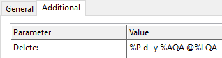
Die Beschreibung dieses Beispiels ist:
Manche Archivierer erlauben, die Unversehrtheit einer archivierten Datei zu prüfen, um sicherzustellen, dass kein Fehler darin ist und nichts beschädigt wurde.
Wenn diese Funktion unterstützt wird, können wir Double Commander konfigurieren und angeben, wie der externe Archivierer dafür aufzurufen ist.
Wir setzen unser Beispiel mit „rar.exe“ fort. So können wir diese Aktion konfigurieren:
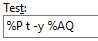
Die Beschreibung dieses Beispiels ist:
Das wird verwendet, wenn wir den internen Befehl cm_TestArchive verwenden.
Wenn kein Fehler vorliegt, wird das Prüffenster geschlossen. Wenn ein Fehler vorliegt, erscheint eine Meldung wie die folgende:
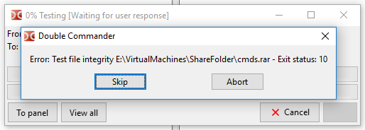
Wenn wir standardmäßig den internen Befehl cm_ExtractFiles aufrufen, um ein Archiv zu entpacken, und die Dateien darin mit einer bestimmten Verzeichnisstruktur angeordnet sind, erzeugt der Archivierer beim Extrahieren dieselbe Struktur neu.
Wenn der Archivierer es unterstützt, ist es aber manchmal sinnvoll, alle Dateien an denselben Ort zu extrahieren, ohne die Verzeichnisstruktur neu zu erzeugen.
Dafür wird die Aktion „Ohne Pfad extrahieren“ verwendet, wenn sie konfiguriert ist.
Beim Beispiel mit „rar.exe“ wird der Befehl dafür so geschrieben:
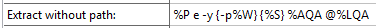
Die Beschreibung dieses Beispiels ist:
Die Wirkung davon ist im Dialog sichtbar, wenn wir verlangen, ein Archiv zu entpacken:
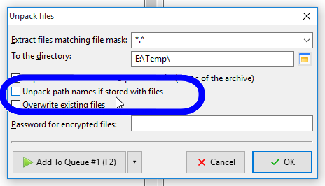
Manche Archivierer können eine „selbstextrahierende“ komprimierte Datei erstellen.
Das bedeutet, dass wir am Ende des Vorgangs eine Programmdatei erhalten, die beim Ausführen den Inhalt dessen extrahiert, was gepackt wurde.
Das ist nützlich, wenn wir sicher sein wollen, dass die Personen, die den Inhalt der komprimierten Datei brauchen, kein Problem beim Entpacken haben: Es muss nichts installiert werden, die Datei wird einfach ausgeführt, und wir erhalten die unkomprimierten Dateien!
Typischerweise wird diese Aktion oft ähnlich wie die „Aktion Hinzufügen“ konfiguriert, und wir fügen nur einen Parameter hinzu, der ein selbstextrahierendes Ergebnis verlangt.
Das ist zum Beispiel bei unserem Beispiel mit „rar.exe“ der Fall. So können wir diese Aktion konfigurieren:
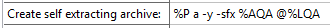
Die Beschreibung dieses Beispiels ist:
Um ein selbstextrahierendes Archiv zu erstellen, beachten Sie bitte, dass der Ablauf derselbe ist wie gewöhnlich beim Erstellen der komprimierten Datei, etwa mit dem internen Befehl cm_PackFiles, aber im erscheinenden Dialog aktivieren wir die Option „Selbstextrahierendes Archiv erstellen“.
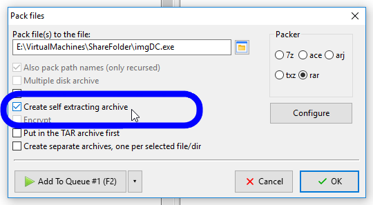
Wir können Double Commander so konfigurieren, dass es die Dateierweiterung einer Datei ignoriert und versucht, ein komprimiertes Dateiarchiv an seinem inneren Inhalt zu erkennen und dann die oben beschriebenen passenden Befehle zum Auflisten und Entpacken aufzurufen.
Hier verwenden wir den internen Befehl cm_OpenArchive.
Ein Beispiel für die Verwendung ist, wenn wir den eigentlichen Inhalt einer selbstextrahierenden EXE-Datei sehen wollen, ohne sie starten zu müssen.
Ein weiteres Beispiel wäre, den Inhalt eines Archivs zu sehen, das mit einer anderen Dateierweiterung als das übliche Archiv gespeichert ist, etwa die DOCX-Datei von Microsoft Word, die tatsächlich eine komprimierte ZIP-Datei ist.
Im Grunde können wir Double Commander so konfigurieren, dass es das Vorhandensein eines strategischen Datenmusters an einer bestimmten Stelle in der ausgewählten Datei erkennt und so das konfigurierte Archiv erkennt.
Diese Muster nennen wir „IDs“, und dieser Abschnitt behandelt ihre Konfiguration.
Dafür haben wir drei Einstellungen: ID, ID-Position und ID-Suchbereich.
Wir weisen Double Commander an, wo nach einem bestimmten ID-Muster zu suchen ist, um eine Archivart zu erkennen, und dann die konfigurierten Befehle zu verwenden, die zur erkannten Archivart gehören.
Beginnen wir mit einem einfachen Beispiel. Hier folgt eine Aufnahme vom Anfang eines 7-Zip-Archivs:
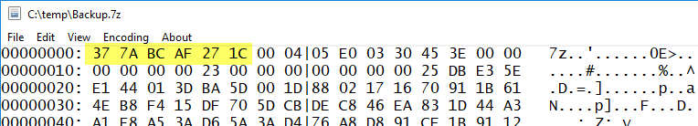
Wenn wir andere 7-Zip-Dateien ansehen, sehen wir, dass die ersten sechs Bytes immer die Folge 0x37 0x7A 0xBC 0xAF 0x27 0x1C sind.
Das nutzen wir, indem wir Double Commander so konfigurieren, dass es eine Datei, die mit dieser Folge beginnt, als 7-Zip-Archiv annimmt.
Genau das tun wir mit der folgenden Konfiguration:
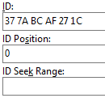
Wir müssen die ID als zweistellige Hexadezimalzahlen schreiben, die durch Leerzeichen getrennt sind.
Die ID-Position (optional) ist eine Position der ID im Archiv. Fehlt sie, wird die ID am Anfang des Archivs gesucht. Wir können die Positionen mit dem Zeichen „-“ angeben: In diesem Fall werden die Positionen vom Ende der Datei berechnet. Der besondere Wert <SeekID> bestimmt die Suche nach der ID, wenn sie über die numerischen Werte der ID-Position nicht gefunden wird. Gesucht wird im Bereich „0 .. Größe der Datei“ oder „0 .. ID-Suchbereich“. Werte können dezimal (12345) oder hexadezimal (0x3039) geschrieben werden. Für negative Werte verwenden wir die Schreibweise 0xFFFFFFFF (-1).
Der ID-Suchbereich (optional) ist eine Anzahl von Bytes, in denen die ID gesucht wird, wenn <SeekID> festgelegt ist. Standardmäßig ist es 1 MB.
Hinweis: Alle obigen Parameter können mit mehreren Werten festgelegt werden. Wir können ein Komma verwenden, um diese mehreren Werte zu trennen.
In unserem Beispiel mit dem 7-Zip-Archiv genügen ID und ID-Position (0, weil am Anfang der Datei).
Wenn wir also den internen Befehl cm_OpenArchive aufrufen, durchsucht Double Commander den Inhalt der Datei, und wenn es das Muster „0x37 0x7A 0xBC 0xAF 0x27 0x1C“ am Offset 0 in der Datei erkennt, verarbeitet es sie als unseren konfigurierten Dateityp 7Z und verwendet dann die zugehörigen konfigurierten Befehle und Parameter zum Auflisten, Extrahieren usw.
In den meisten Fällen ist es nicht nötig, Dateien in hexadezimaler Darstellung zu untersuchen: Die Dateisignatur findet sich in der Formatspezifikation, oder wir verwenden vorhandene Listen, Datenbanken oder Hilfsprogramme (zum Beispiel diese Wikipedia-Seite oder die MIME-Datenbank von FreeDesktop.org).
Die oben beschriebenen Schritte genügen gewöhnlich, um einen externen Archivierer zu verwenden, aber für den Fall haben wir noch ein paar weitere Optionen:
Konsolenausgabe anzeigen – Wenn aktiviert, schreibt Double Commander (Zeile für Zeile) das Ergebnis der Arbeit des externen Archivierers und des Analysierers in das Protokollfenster.
Debug-Modus – Ähnlich wie die vorherige Option, aber das Ergebnis der Arbeit wird auch in die Debug-Meldungen von Double Commander ausgegeben (siehe die Beschreibung von --debug-log). In diesem Fall wird die temporäre Datei mit der Dateiliste (%L in unserem Beispiel) nach Abschluss des Vorgangs nicht automatisch gelöscht.
Wenn die Anzeige des Protokollfensters in den Einstellungen deaktiviert ist, wird es zwangsweise gezeigt und ausgeblendet, wenn Double Commander geschlossen wird. Meldungen werden nicht in der Protokolldatei gespeichert.
Mehrere Parameter, die von Hand direkt in der Konfigurationsdatei multiarc.ini oder durch Exportieren/Importieren der Archivierer-Einstellungen hinzugefügt oder geändert werden können.
AskHistory0 ... AskHistory50
Die Werte speichern zusätzliche Parameter des Archivierers, die wir im Dialog zum Packen von Dateien hinzugefügt haben. Wir können sie von Hand ändern, neue hinzufügen oder unnötige löschen.
Das ist ein bequemer Weg, mehrere Parametersätze zu speichern, die für verschiedene Gruppen von Dateien und Aufgaben besser geeignet sind.
FallBackArchivers
Erlaubt, mehrere Programmdateien von Archivierern anzugeben, getrennt durch Kommas (vollständige Dateinamen oder Namen ohne Pfad). Wenn die Programmdatei aus dem Feld „Archiver“ nicht gefunden wird, verwendet die Anwendung die erste gefundene aus dem Wert FallBackArchivers.
Ein Beispiel siehe die Verwendung von 7-Zip in multiarc.ini im Ordner „default“.
IgnoreString0 ... IgnoreString50
Das ist ein Weg, Zeilen anzugeben, die Double Commander beim Analysieren der Ausgabe des Archivierers ignorieren soll.
Wenn der Wert mit dem Zirkumflex („^“) beginnt, muss der Text am Anfang der ignorierten Zeilen stehen. Andernfalls kann der Text irgendwo in der Zeile stehen.
SizeStripChars
Es ist selten, aber der Archivierer kann Dateigrößen mit Zifferngruppierung anzeigen (zum Beispiel „12,345“ oder „12 345“ statt „12345“). SizeStripChars erlaubt, das Zeichen anzugeben, das entfernt werden soll.
Wenn wir mehrere Zeichen angeben müssen (der Wert kann zum Beispiel von den regionalen Einstellungen des Betriebssystems abhängen), müssen sie ohne Trennzeichen aufgeführt werden.
Dieses Menü enthält mehrere zusätzliche Funktionen:
Automatisch konfigurieren – Double Commander prüft alle Programmdateien der Archivierer: Wenn eine Datei gefunden wird, fügt das Programm automatisch ihren vollständigen Pfad hinzu und aktiviert den Archivierer, andernfalls wird der Archivierer deaktiviert.
Änderungen verwerfen – setzt alle ungespeicherten Einstellungsänderungen zurück.
Archivierer sortieren – sortiert die Liste der Archivierer alphabetisch.
Alle deaktivieren und Alle aktivieren – alle Archivierer aktivieren oder deaktivieren.
Exportieren... und Importieren... – erlauben uns, die Einstellungen der Archivierer zu exportieren und zu importieren (alle Archivierer oder einen Teil davon).
Standardmäßig werden Dateien, deren Erweiterungen in den Einstellungen der WCX-Plugins und der externen Archivierer angegeben sind, als Ordner geöffnet. Um sie in einer zugeordneten Anwendung zu öffnen, können wir den Eintrag „Öffnen“ im Kontextmenü der Datei verwenden (in diesem Fall werden aber nur die System-Dateizuordnungen verwendet), oder wir können die gewünschte Aktion zum Menü „Aktionen“ hinzufügen.
Um die Taste Enter oder den Doppelklick zu verwenden, müssen wir die Einstellungen ändern.
Wir können die Erweiterung einfach aus den Einstellungen entfernen, aber dann werden die Befehle cm_OpenArchive und cm_ExtractFiles nicht mehr verfügbar. Ein anderer Weg:
Wenn ein WCX-Plugin verwendet wird, können wir die Plugin-Einstellungen öffnen, die Erweiterung auswählen und die Option „Als normale Dateien anzeigen (Packersymbol ausblenden)“ aktivieren.
Wenn ein externer Archivierer zum Entpacken von Dateien verwendet wird, können wir die Option „Als normale Dateien anzeigen“ verwenden oder die Felder für die Verwendung der ID ausfüllen und die Dateierweiterung nicht angeben. Die erste Methode erlaubt auch, neue Archive zu erstellen.
Für solche Dateien verwendet Double Commander das zugeordnete Symbol statt des allgemeinen Archivsymbols.